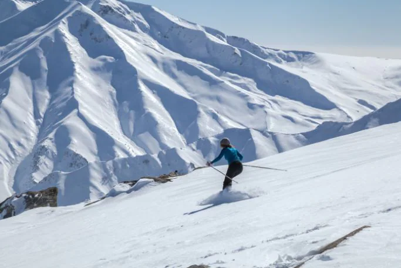
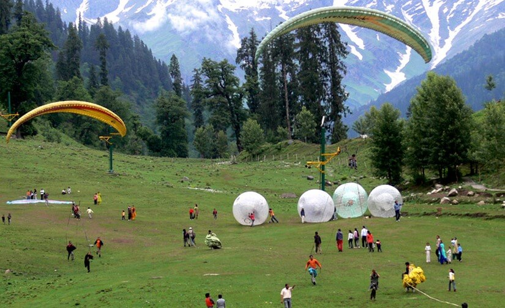
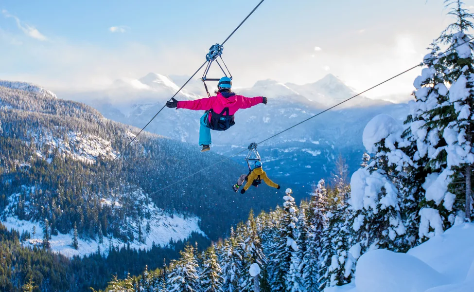

GULMARG
situated at an altitude of 2730 m above sea level, Gulmarg is a popular skiing destination located in Pir Panjal Range of Union territory of Jammu and Kashmir. Surrounded by snow-covered lofty Himalayas, meadows of flowers, deep ravines, evergreen forested valleys, Gulmarg also has the world's second-highest Gondola ride.Among one of the top honeymoon destinations in India, Gulmarg boasts of being a beautiful town without the crowd like Manali and Shimla. Gulmarg has also been developed as an adventure hub as Indian Institute of Skiing and Mountaineering is located here. A lot of courses on trekking, mountaineering, skiing, and snowboarding are offered by IISM. There are a lot of other private tour operators in Gulmarg as well which provide similar courses and facilities for skiing, snowboarding and trekking. Known for its scenic beauty, Gulmarg has also been a popular destination for shooting of various Bollywood films.
SANASAR
One of the lesser-known hill stations in Jammu-Kashmir region, Sanasar is an adventure enthusiasts' haven offering various activities such as paragliding, rock climbing, abseiling and trekking. The area is built in a cup-shaped meadow surrounded by gigantic conifers. Sanasar is named after two local lakes and will offer you a quieter side of Jammu and Kashmir infused with adventure and excitement on demand.The twin villages of Sana and Sar, need a place in your list if you are in for spending some time in a village and that too an eco-friendly one, with one its step in the past and one in a naturally sustainable future. The area could offer you an ideal extension to your trip to Jammu and Kashmir which is a little less full of activity and will tease the excitement in you with the host of activities it has to offer.


NUBRA
Nubra Valley lies in the union territory of Ladakh at a distance of around 140 Km from Leh. Located on the ancient Silk Route, the valley has Shyok and Nubra rivers snaking through it and some beautiful monasteries.With arid mountains in the backdrop, Hundar in Nubra Valley is famous for the Bactrian camel rides. Bactrian camels are of the rarest sort, having two humps and were the primary source of transportation in the silk route. Diskit Monastery in Nubra Valley is known for the 32 metre Maitreya Buddha statue located near the monastery. There are a lot of activities like ATV rides and ziplining in the Nubra Valley.The region is currently under military supervision because the road further leads to the Siachen base camp, which happens to be the highest battlefield in the world. Most tourists travel to Nubra Valley from Leh through Khardung La.
PATNITOP
it is a famous hill station in the Udhampur district of Jammu & Kashmir, known for endless meadows and panoramic views of the snow-capped peaks of the Himalayas. Along with the widespread abundance in sceneries, Patnitop is known for activities like skiing and trekking as well as water springs.Patnitop offers adventure activities like paragliding, trekking, skiing etc.Sanasar, located 17 kms away is also popular for a paragliding base, golf courses along with extended sightseeing options.Nathatop, located approximately 14 km away from Patnitop is known for panoramic view of the snow-covered peaks and also as the take off site for Paragliding.Shiva Garh is situated around 11 kilometres away from Patnitop, at an altitude of almost 3500 meters. It makes for a short but an exhilarating trek experience.
